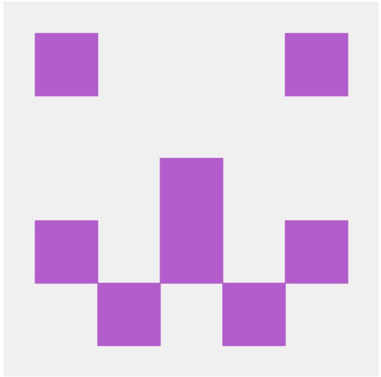

My name is Joanne Dehnbostel. I'm enrolled in the MIT xPro Professional certificate in Coding:Full Stack Development with MERN bootcamp. I'm excited to be learning new coding skills. My career path has been multidisciplinary, my career began in laboratory science with an emphasis on microbiology and immunology. Recently I went back to school to study infectious disease epidemiology and biostatistics to try to understand microbiology and immunology at the population level. I graduated in 2020 just as the COVID-19 pandemic began. The process of analyzing this type of data, and the quantity of new data to analyze, made me aware of the lack of infrastructure for the analysis of scientific evidence for both clinical decision support and development of public health policy especially in the midst of a pandemic. For the last year I have been working as a Research and Analysis manager for a small start up that creates software for the dissemination of scientific data using Health Level Seven (HL7) Fast Healthcare Interoperability Resources (FHIR). Although I have a significant working knowledge of SAS and R software (which is commonly used for epidemiology and biostatistics) I knew relatively little about software for user interfaces and websites. So I enrolled in this "bootcamp" for full stack web design to broaden my understanding of JavaScript, node js, REACT, and other software so that I can contribute in my current position with a better technical understanding of our website and webtools. This website contains a few of my early projects. I hope you enjoy it.
